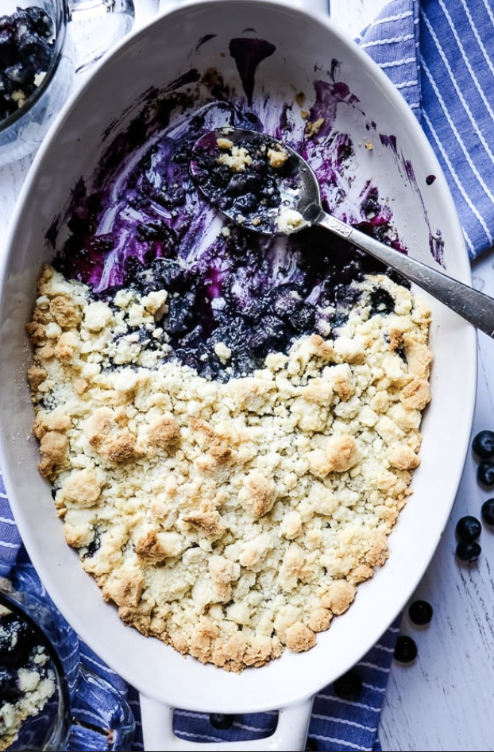

Home
Super Easy, Super Tasty Blueberry Crumble

You are in for a treat!
Low effort high reward dessert that is so easy to put together and so delicious to eat
The hardest part of this dish is slicing up a stick of butter. It's fool proof and so so good.
THis recipe can be adapted and use with gluten free cake mix, different types of fruit pie filling, etc.
It's a crowd pleaser that'll take about 15 minutes to assemble and have everyone asking for seconds. This recipe yields around 16 servings.
Ingredients
- 1 can of blueberry pie filling
- 1 box of white/yellow/vanilla cake mix
- 1 stick of butter
Instructions
- Preheat the oven to 375 degrees
- Add some butter to your baking dish and stick it in the oven while it preheats
- Take your stick of butter and cut it into slices
- Once butter is melted, take the dish out of the oven and spread the melted butter all over the dish
- Add blueberry pie filling and spread out in the dish
- Cover blueberry pie filling with dry cake mix
- Put the slices of butter on top of the dry cake mix, spread them out a bit
- Bake for 30-45 minutes - it should be a golden brown color
Optional: Serve warm topped with a scoop of vanilla ice cream.
Home
What's for dinner? Try this recipe:Delicious Stuffed Shells